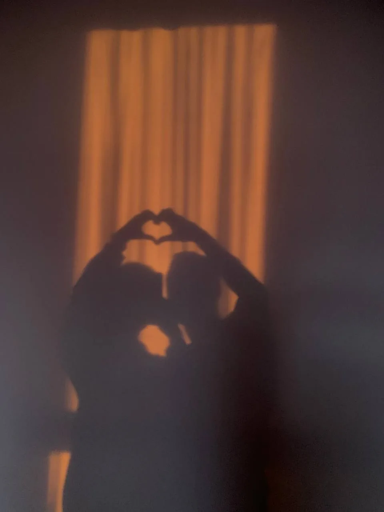

ДЛЯ НАСТІ · ОСОБИСТО
Твій Макс ♥
Не відео з TikTok. Не чергова романтична листівка. Просто я знайшов один трохи дивний спосіб сказати тобі те, що не завжди виходить сказати вголос.
А ті, на яких ми справжні. Обери будь-яку фотографію: за кожною — маленький шматочок цієї історії.
Відкрито 0 із 10 фото (для продовження достатньо 6)
Не якісь великі слова. А звичайні моменти, з яких і складається наша історія. Натисни на кожну картку.
0 / 4 відкрито
Я не збираюся робити вигляд, що все завжди чудово. Є дещо, за що я хочу відповідати сам, а не прикрашати словами.
Невеликий тест. Наскільки добре ти знаєш цього підозрілого типа, який усе це зробив?
Зітри верхній шар пальцем (або мишкою). Так, я реально зробив це заради тебе.
Можеш читати не поспішаючи. Я нікуди не жену.
Торкнись п’яти світлих зірок. Кожна з них зберігає одну мою думку.

ДЛЯ НАСТІ · ВІД МАКСА
І ні, це не кінець. Це лише десять кадрів із тих, які я хочу зберегти.